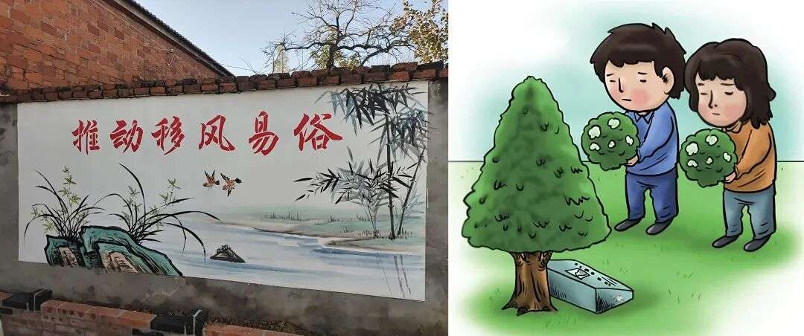
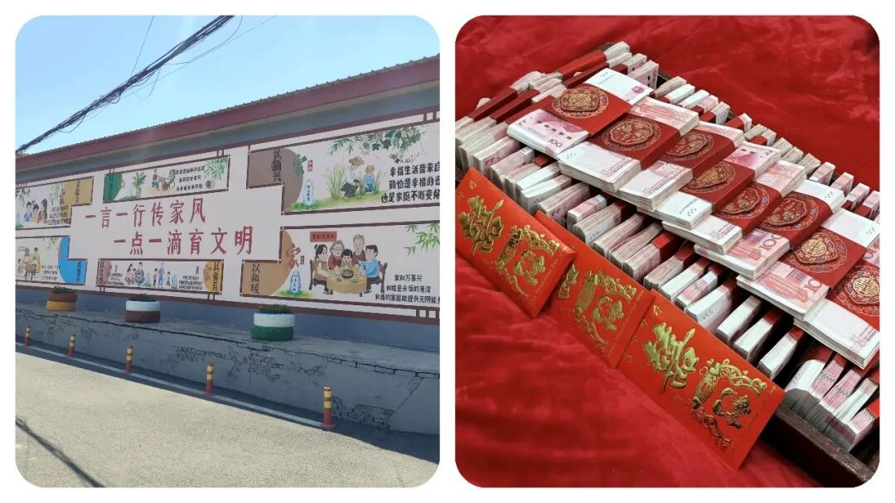

体制内人员回乡抬棺被“问责”？到底冤不冤？乡村“人情和规矩”到底该怎么选？
原创
点击关注👉🏻
点击关注👉🏻
田间烟火
在小说阅读器读本章
去阅读
在小说阅读器中沉浸阅读
点击上方
蓝字
关注我们
田间烟火🔥
大家好，我是【田间烟火🔥】～
今天我们来聊聊一下民间的人情世故：
“如果你的亲人或者邻居亲戚去世，身为公职人员，你会去帮忙抬棺吗”？
看上去这是个简单不过的选择，但等到放在
寿宁县鳌阳镇
的现实中，却成了一场闹得沸沸扬扬的风波。
6月11日，这里一户人家办丧事，因为坚持走老习惯，在送葬时抬棺上街，结果惹来了一大堆麻烦。
镇上本来再三强调，丧事要简单办，相关家庭还专门签了承诺书，说不会抬棺过街。
但等到送葬那天，亲友队伍还是照做了。
没过多久，几名公职人员被问责，主家人也被拘留，殡仪馆驾驶员被停职。
风波一出，不少人觉得委屈。
只是在乡里帮自家亲戚抬棺，真有那么严重？
在福建，操办红白喜事，左邻右舍不帮忙，哪成得了？
尤其葬礼，大伙儿合力扛着走，才算是体面送别。
你若是亲叔去了，明明人在家门口按兵不动，时间长了，难道村里人还愿意帮你家办事
？
本地规矩，红白喜事大家互帮互助，今天你帮我，明天我帮你。
这就是乡下的情分。
那白事又和结婚不一样。
结婚可以拉到酒店，吃席热闹，不去帮忙影响不大。
丧事办在家门口，怎么搬到酒店去？
酒店也没人敢让你抬棺进门。
遇上亲人过世，整条街上的人都会来搭一把手。
村干部如果袖手旁观，那还算亲戚吗？
背后议论马上传开。
01
乡情与规矩的两难选择
可问题在于，遇到新规要求简办，作为体制内公职人员，
到底要听乡情还是守规矩？
这事其实比表面复杂多了。
不是没人懂规矩，也不是哪个老百姓想和官方赌气。
对于很多乡镇里的基层公职人员来说，这类人情给的压力，真能让人骑虎难下
。
如果规矩太死板，一刀切，既要求公职人员板着脸回避，时间长了，他们不仅要被处分，老家的人情关系也会裂缝。
左一张情、右一张规矩，脚下这条线，真的很细。
记得有个地方，那年春节期间，为了疫情管控，不准聚餐办席。
结果村里一名老师吃了自家侄女的酒席，第二天就被处分。
群众说“
太绝情
”，领导觉得“
不遵号令
”。
最后大家都很窝心。
这和今天的寿宁事件，其实是同一种纠结
。
抬头是规矩，低头是人情，两边都难得罪
。
不过，也不是所有地方处理起来都一样。
有一些镇，动迁后，年轻干部流失严重。
到亲戚家帮忙干活，公私不分的事反倒少了，干部自己也尽量远离风头。
村里规矩淡了，乡里人情也松散了不少。
不能说哪边就一定对，关键是怎么看待“
规则
”和“
温度
”之间的界线。

02
争议背后的核心问题
翻回来，寿宁的这次处分，为啥争议那么大
？
说到底，就是干部“
怎么做都可能是错
”。
帮忙吧，怕被通报罚；
不帮吧，又成冷情汉。
乡村的习惯不是一天两天就能变，也不能要求村干部一碗水端平、面面俱到。
很多人也明白，现在农村规矩在变，白事、宴席都比原先低调简单不少。
但祭祀这事，人情分分合合，总是绕不过。
真正的问题，其实不是乡里干部不明白新的政策，而是怎样把规矩和人情分清。
03
可参考的灵活处理方式
你可以像有些地区那样，干部告别“
跑场宴
”，提前立规矩，所有红白喜事都定标准，一家一户都能照章“
办席
”，
既不冷落亲情，也不越线。
这种做法，反而减少了口水战，村里该帮忙的帮，规章也挂在墙上，谁也没话说。

04
如何平衡身份与乡情
？
再说回寿宁事件，这场风波，表面看是丧礼风俗和政策之间较劲，
实际上考验的，是公职人员面对
底线
和
人情
的选择
。
作为普通人，当然会希望亲情最重要。
但公职身份注定和普通百姓不一样。
你只要一穿这身衣服，无论在哪，都可能被大家用更高的标准挑毛病。
你说委屈，但大家想看的，是“
干部榜样
”，而不是“
我家的谁谁
”。
真要说教训，就在于“
做公做事
”不能光靠情面。
这社会越讲规矩，大家办事才越踏实，但情分的温度也不能凉了。
形象、底线，哪个也甩不下
。
这道理早就写在小事里，但每次一有风波，还是会有人闹心。
说到底，公职人员要扛起身份的压力，也不能忘了自己从哪个村出来
。
大家该办的事照办，该守的规、该避的线也要没商量
。
规则要硬，心却要软点，这是最难的考验。
身在乡村，做人做事不容易。
人情是桥，规矩是路，两样都不能断
。
没经历过的人，很难讲清什么叫“
骑在规矩
和
人情之间
”。
像寿宁这事，只能算无奈，但未必就是结局
。
走得长远，终究是边界清了，日子才轻松；
底线守住了，亲戚才相处安稳。
这才是干部和乡情可以和谐共处的最佳状态
。
🍯点击下方👇🏻
对此，你怎么看待该事件呢？
评论区聊聊你的看法～
「本文仅供阅读，无不良引导，请理性阅读」
如有侵权告知秒删，素材事件源于：
《
关于寿宁县鳌阳镇移风易俗事件通报
》
分享
收藏
点赞
在看
修改于